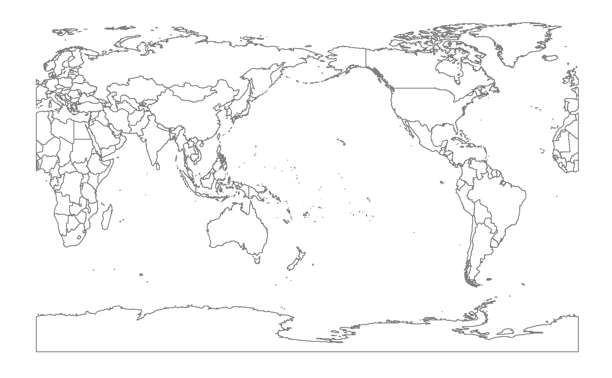
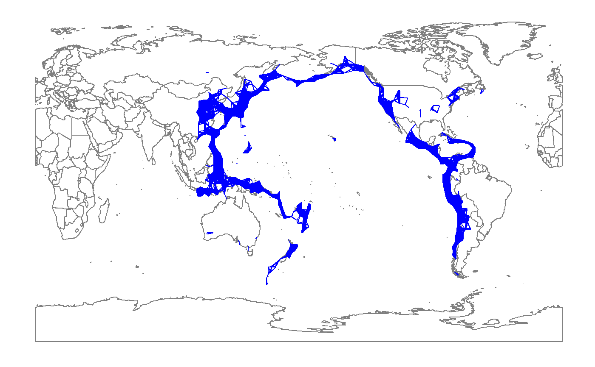

layer_PersHomo.RdGiven a points set as Geographic locations in a data.frame, extends ggplot2 functionality to draw a line from location to location with defined criterion of distance in km. The concept is inhered from persist homology. The linkage in resulting figures can be used to recognize patterns or cluster of points. Compare to ggplot2 package, plotly package might be better for this functionality because the linkage can be shown on the globe instead of a flat figure. To the purpose of the package, this layer attempt to show the capability of ggplot on a small scale data instead of global data.
layer_PersHomo(mapping = NULL, data = NULL, geom = "segment", d = NULL, position = "identity", na.rm = FALSE, show.legend = NA, inherit.aes = TRUE, ...)
| mapping | Set of aesthetic mappings created by [aes()] or [aes_()]. If specified and `inherit.aes = TRUE` (the default), it is combined with the default mapping at the top level of the plot. You must supply `mapping` if there is no plot mapping. |
|---|---|
| data | The data to be displayed in this layer. There are three options: If `NULL`, the default, the data is inherited from the plot data as specified in the call to [ggplot()]. A `data.frame`, or other object, will override the plot data. All objects will be fortified to produce a data frame. See [fortify()] for which variables will be created. A `function` will be called with a single argument, the plot data. The return value must be a `data.frame`, and will be used as the layer data. |
| geom | The geometric object to use display the data |
| d | the magnitude of real Geo distance (in km) used as the criterion to link two locations |
| position | Position adjustment, either as a string, or the result of a call to a position adjustment function. |
| na.rm | If `FALSE`, the default, missing values are removed with a warning. If `TRUE`, missing values are silently removed. |
| show.legend | logical. Should this layer be included in the legends? `NA`, the default, includes if any aesthetics are mapped. `FALSE` never includes, and `TRUE` always includes. It can also be a named logical vector to finely select the aesthetics to display. |
| inherit.aes | If `FALSE`, overrides the default aesthetics, rather than combining with them. This is most useful for helper functions that define both data and aesthetics and shouldn't inherit behaviour from the default plot specification, e.g. [borders()]. |
| ... | Other arguments passed on to [layer()]. These are often aesthetics, used to set an aesthetic to a fixed value, like `colour = "red"` or `size = 3`. They may also be parameters to the paired geom/stat. |
#> #>#> #> #>#> Warning: 程辑包'dplyr'是用R版本3.5.2 来建造的#> #>#> #> #>#> #> #>#> #> #>## plot base map worldmap <- map_data("world2") p <- ggplot() + geom_polygon(data=worldmap, aes(x=long, y=lat, group = group), fill="white", colour="#7f7f7f", size=0.5) + theme(axis.line=element_blank(), axis.text.x=element_blank(), axis.text.y=element_blank(), axis.ticks=element_blank(), axis.title.x=element_blank(), axis.title.y=element_blank(), legend.position="none", panel.background=element_blank(), panel.border=element_blank(), panel.grid.major=element_blank(), panel.grid.minor=element_blank(), plot.background=element_blank()); pdata(eqRaw) eq <- eqRaw %>% filter(LONGITUDE > 110 | LONGITUDE < -45) %>% mutate(LONGITUDE = ifelse(LONGITUDE < 0, LONGITUDE + 360, LONGITUDE)) ## add layer_PersHomo fp <- p + layer_PersHomo(data= eq,mapping = aes(x=LONGITUDE, y=LATITUDE), d=450000, colour = "blue") + geom_point(); fp